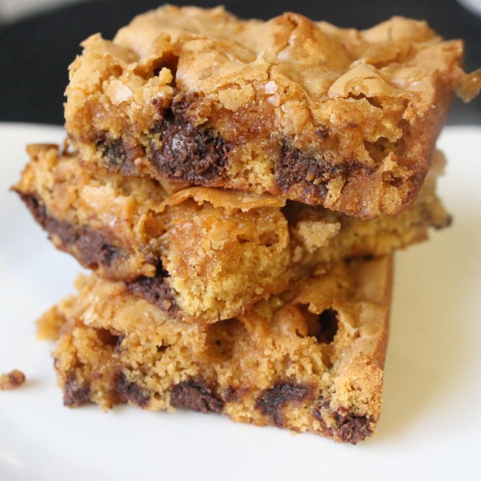

brownies

Disappearing Marshmallow Brownies
A chewy blonde brownie. Please pass the milk!
Ingredients
- ½ cup butter
- 1 cup butterscotch chips
- ⅔ cup packed brown sugar
- 2 eggs
- 1 teaspoon vanilla extract
- 1 ½ cups all-purpose flour
- 2 teaspoons baking powder
- ½ teaspoon salt
- 2 cups miniature marshmallows
- 1 cup semisweet chocolate chips
Steps
- Preheat oven to 350 degrees F (175 degrees C). Grease a 9x13 inch pan.
- Using a microwave-safe bowl, melt the butterscotch chips and butter together in the microwave, stirring occasionally until smooth. Set aside to cool.
- In a large bowl, stir together the brown sugar, eggs, and vanilla. Mix in the melted butterscotch chips, then the flour, baking powder, and salt until smooth. Stir in the marshmallows and chocolate chips last. Spread the batter evenly into the prepared baking pan.
- Bake for 15 to 20 minutes in preheated oven. Cool, and cut into squares.